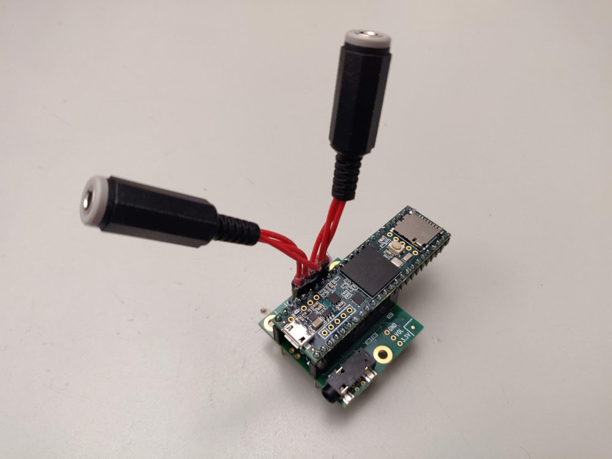

DSP on the Teensy With Faust
Introduction
The Teensy is a development board series based on a microcontroller and distributed by PJRC. The Teensys 3.(2+) are based on an ARM Cortex-M4 providing plenty of computational power for real-time audio signal processing applications. In particular, the Cortex-M4 used on the Teensy 3.6 (MK66FX1M0VMD18) hosts a Floating Point Unit (FPU) and has a clock of 180MHz (overclockable at 240MHz). Also, PJRC recently released the Teensy 4.0 which is based on a Cortex-M7 (FPU) with a clock of 600MHz and much more memory than the 3.6. When combined with their respective audio shields (also distributed by PJRC), the Teensy 3.6/4.0 can be used to synthesize and process sound with advanced algorithms, etc. This paper provides a survey on the performances of such system when used with Faust-generated DSP objects.

Using this type of chip for embedded real-time audio DSP presents a wide range of advantages:
- low power consumption (i.e., can be easily powered by a battery),
- bare-metal: the lack of operating system allows for the use of very low block sizes (i.e., as low as 8 samples on the Teensy) and therefore extremely low latency,
- very short boot time (<1s),
- etc.
The Teensy/Teensyduino comes with an Audio Library that can be used to synthesize sound directly on the Teensy. It uses a patching paradigm where DSP objects can be connected together using virtual patch chords. An online tool provides a user interface to this system and allows for the implementation of sound processing algorithms in a "Max/MSP way." Various elements can be used as the input and the output of the system (e.g., built-in Teensy DAC/ADC, audio shield, etc.). More information and tutorials can be found on the Audio Library webpage.
The current DSP objects of the Teensy Audio Library can be used to implement simple algorithms but their scope is relatively limited (i.e., basic oscillators, filters, etc.). faust2teensy can be used to implement new objects for the Teensy Audio Library using Faust. Since Faust is currently not able to produce fixed-point DSP C++ code, generated object use floating point arithmetic internally. The main consequence is that this system will only work efficiently if it's used on a Teensy board hosting an FPU. Hence, we strongly recommend you to use the Teensy 3.6/4.0 for this (things will work on the 3.2, but computational power will be extremely limited).
This tutorial walks you through the steps of synthesizing sound with Faust on the Teensy.
Band-Limited Sawtooth Oscillator on the Teensy
The source code of the section can be downloaded here
The Teensy Audio Library doesn't come with any band-limited sawtooth wave oscillator (which are crucial to the implementation of good quality virtual analog synthesizer). The Faust libraries come with a wide range of band-limited oscillators that can be easily ported to the Teensy.
The following program (FaustSawtooth.dsp) implements a sawtooth wave oscillator with controllable gain and frequency:
import("stdfaust.lib");
freq = nentry("freq",440,20,20000,0.01) : si.smoo;
gain = nentry("gain",1,0,1,0.01) : si.smoo;
process = os.sawtooth(freq)*gain;
si.smoo is used to interpolate the values of the freq and gain parameters to prevent clicks and abrupt changes.
This Faust program can be turned into an object for the Teensy Audio Library simply by running the following command in a terminal:
faust2teensy -lib FaustSawtooth.dsp
which will generate a zip file containing a .cpp and a .h file in return. Alternatively, the Faust online compilation service can be used through the Faust Online Editor to carry out this task (Export(Truck)/source/teensy). The generated package should contain a file called FaustSawtooth.cpp and FaustSawtooth.h.
Create a new project in the Arduino/Teensyduino software (e.g., call it faustSawtooth) and place FaustSawtooth.cpp and FaustSawtooth.h in the same folder (whose name should probably be /faustSawtooth) than faustSawtooth.ino.
Replace the content of the Arduino program with the following:
#include <Audio.h>
#include "FaustSawtooth.h"
FaustSawtooth faustSawtooth;
AudioOutputI2S out;
AudioControlSGTL5000 audioShield;
AudioConnection patchCord0(faustSawtooth,0,out,0);
AudioConnection patchCord1(faustSawtooth,0,out,1);
void setup() {
AudioMemory(2);
audioShield.enable();
audioShield.volume(0.1);
}
void loop() {
faustSawtooth.setParamValue("freq",random(50,1000));
delay(50);
}
First, the header file (.h) of the object generated with faust2teensy is included. An instance of FaustSawtooth is then created. Since the Teensy (3.6/4.0) that we're using for this tutorial is equipped with a Teensy Audio Shied, we also create an instance of AudioOutputI2S and AudioControlSGTL5000. We then connect the Faust object to the 2 outputs of the audio shield using AudioConnections. Note that if the Faust object had a stereo output (i.e., process = os.sawtooth(freq)*gain <: _,_), the following should have been written instead:
AudioConnection patchCord0(faustSawtooth,0,out,0);
AudioConnection patchCord1(faustSawtooth,1,out,1);
The number of inputs and outputs of objects generated with faust2teensy corresponds to the number inputs and outputs of the Faust program.
2 bytes of memory are allocated in setup(). Note that if the Faust object had audio inputs, this number should probably be greater (i.e., typically 6 for stereo in and stereo out).
audioShield.enable() activates the audio shield and audioShield.volume(0.1) sets the gain of the headphone output (this step is optional).
The value of the freq and gain parameters can be set using the setParamValue method. Note that for larger Faust objects, parameter paths might be used instead. Here, the value of freq is randomly generated every 50ms.
After making these changes, you should be able to compile and upload your sketch to the Teensy 4.0.
Special Note About the Teensy 3.6
Before this program can be compiled and uploaded to the Teensy 3.6, some modifications need to be made to the configuration file used by the compilation script used by Teensyduino (boards.txt). You should be able to find it in hardware/teensy/avr in the source of the Arduino software (its location will vary depending on the platform your using). The most important thing to do here is to use g++ instead of gcc for linking, so:
teensy36.build.command.linker=arm-none-eabi-gcc
should become:
teensy36.build.command.linker=arm-none-eabi-g++
in boards.txt. Beware that on older versions of Teensyduino, these changes should be made directly to platform.txt.
After making these changes, you should be able to compile and upload your sketch to the Teensy 3.6.
Audio Effect
The source code of the section can be downloaded here
The same procedure as the one described in the previous section can be followed to generate audio effects for the Teensy Audio Library. dm.zita_light implements a high quality stereo feedback delay network reverb. It hosts its own user interface elements/parameters to control its dry/wet mix (Dry/Wet Mix) and its level in dB (Level).
A simple Faust program (FaustZita.dsp) calling this effect could look like that:
The corresponding Teensy Audio Library object can be generated by running:
faust2teensy -lib FaustZita.dsp
and finally called in a Teensy program:
#include <Audio.h>
#include "FaustZita.h"
FaustZita faustZita;
AudioInputI2S in;
AudioOutputI2S out;
AudioControlSGTL5000 audioShield;
AudioConnection patchCord0(in,0,faustZita,0);
AudioConnection patchCord1(in,1,faustZita,1);
AudioConnection patchCord2(faustZita,0,out,0);
AudioConnection patchCord3(faustZita,1,out,1);
void setup() {
AudioMemory(6);
audioShield.enable();
faustZita.setParamValue("level",0);
}
void loop() {
float dw = analogRead(A0)/512 - 1;
faustZita.setParamValue("dryWet",dw);
delay(10);
}
Note that in this example, a potentiometer connected to the Analog Input 0 of the Teensy is used to control the dry/wet mix of the reverb.
Additional Configuration for Low Audio Latency
Thanks to its bare-metal architecture, the Teensy allows for extremely low audio latency which would be more or less impossible to achieve if an operating system was used. Audio latency is mostly determined by the block size of the system. The default block size of the Teensy Audio Library is 128 samples but it can be cranked down to 8 samples (only if Faust DSP objects are used exclusively) without impacting performances too much (see the corresponding SMC paper). Block size is set by a C++ macro (AUDIO_BLOCK_SAMPLES) that can be overridden before compilation by passing it as an argument to the C++ compiler by substituting the following line in boards.txt (see previous section):
teensy36.build.flags.defs=-D__MK66FX1M0__ -DTEENSYDUINO=146
with:
teensy36.build.flags.defs=-D__MK66FX1M0__ -DTEENSYDUINO=146 -DAUDIO_BLOCK_SAMPLES=8
on the Teensy 3.6, and:
teensy40.build.flags.defs=-D__MK66FX1M0__ -DTEENSYDUINO=146
with:
teensy40.build.flags.defs=-D__MK66FX1M0__ -DTEENSYDUINO=146 -DAUDIO_BLOCK_SAMPLES=8
on the Teensy 4.0.
Similarly, the sampling rate (44100KHz by default) can be set using the AUDIO_SAMPLE_RATE_EXACT macro. Note that computing the "exact" sampling rate compatible with the clock of your Teensy might be a bit tricky. For example, AUDIO_SAMPLE_RATE_EXACT is 44117.64706 by default and not 44100, etc.
Warning!!!
In the latest version of the Teensy Audio Library, a "weird" correction to the code of the built-in freeverb function has been made an will prevent you from using a block size of 8 samples. Here's a fix to this problem that should be made in the installed version of effect_freeverb.cpp:
0, 0, 0, {
0, 0, 0, 0, 0, 0, 0, 0,
#if AUDIO_BLOCK_SAMPLES > 8
0, 0, 0, 0, 0, 0, 0, 0,
#endif
#if AUDIO_BLOCK_SAMPLES > 16
0, 0, 0, 0, 0, 0, 0, 0, 0, 0, 0, 0, 0, 0, 0, 0,
#endif
Notes About Computational Power and Memory Footprint
While the Teensy 3.6 is relatively powerful and can be used to run complex DSP algorithm (up to 90 Faust sine waves in parallel), it doesn't have a lot of RAM. For that reason, algorithms with a large memory footprint (e.g., anything using delay a lot such a reverbs, wave table oscillators, etc.) might have to be adapted to be run on the Teensy. For example, the default Faust sine wave oscillator uses a table of 65536 samples which is to big to be loaded in the Teensy RAM. Hence, its definition should be adapted, e.g.:
osc(freq) = rdtable(tablesize, os.sinwaveform(tablesize), int(os.phasor(tablesize,freq)))
with{
tablesize = 1 << 15; // instead of 1 << 16
};
Similarly, the maximum size of the delay lines of some reverb algorithms might be too big and should be adjusted, etc.